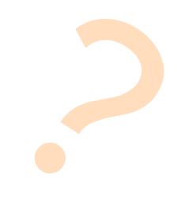

КРИТ-2024
Добрый день, меня зовут Гуляев Кирилл
и я участник конкурса “КРИТ-2024”
Безопасный интернет
Безопасный интернет
Большая часть нашей повседневной жизни так или иначе связана с интернетом: в интернете мы работаем, учимся и даже общаемся с друзьями. Проаеденный в 2021 опрос показал, что у средней семьи в России имеется около 15 устройств, подключенных к интернету, в то время как в 2019 году таких устройств было всего 6. С ростом количества онлайн-аккаунтов и подключенных к интернету устройств растут возможности злоумышленников, Поэтому так важно знать правила безопасности в интернете – они помогут защитить от угроз ваши данные и устройства. В этой статье мы расскажем об основных интернет-угрозах и способах защиты от них.
Пользователи интернета подвергаются целому ряду потенциальных угроз, о которых чаще всего даже не подозревают. Киберпреступники неустанно изобретают новые методы обмана интернет-пользователей. Вот лишь несколько онлайн-угроз, с которыми может столкнуться ваша семья.
Кража персональных данных
Мошенничество на сайтах и в приложениях для знакомств
Кибербуллинг в социальных сетях
Неприемлемый контент
Вредоносные программы и вирусы
Неверные настройки конфиденци-альности
“Интернет тебе не враг - если помнить что и как))”
Мы не рекомендуем использовать публичные сети Wi-Fi, однако понимаем, что иногда это неизбежно, особенно для тех, кто всегда в пути. Выходя в интернет через общественную сеть WI-FI, вы не контролируете ее безопасность, а значит, легко можете стать целью для киберпреступника
Пароли – одно из самых слабых мест в системе кибербезопасности. Пользователи часто создают пароли, которые легко запомнить. Следовательно, злоумышленникам не составляет труда подобрать их с помощью специальных программ
Многофакторная аутентификация – это способ проверки подлинности, при котором для доступа к учетной записи используются два или более метода проверки. Например, вместо простого запроса имени пользователя или пароля при многофакторной аутентификации запрашивается дополнительная информация
Разработчики постоянно работают над безопасностью продуктов, отслеживая последние угрозы и выпуская исправления безопасности в случае обнаружения уязвимостей в приложениях. Используйте последние версии операционных систем и приложений, чтобы не пропускать свежие обновления безопасности
Большая часть правил безопасности в интернете актуальна как для взрослых, так и для детей. Однако объяснить их детям не всегда легко. Дети могут совершенно случайно выдать злоумышленникам информацию, открывающую доступ к вашим системам. Обучив детей основам безопасности в интернете, вы сможете защитить устройства вашей семьи от неприятностей. Вот три темы, которые нужно обсудить с ребенком.
Мы не рекомендуем использовать публичные сети Wi-Fi, однако понимаем, что иногда это неизбежно, особенно для тех, кто всегда в пути. Выходя в интернет через общественную сеть WI-FI, вы не контролируете ее безопасность, а значит, легко можете стать целью для киберпреступника
Мы не рекомендуем использовать публичные сети Wi-Fi, однако понимаем, что иногда это неизбежно, особенно для тех, кто всегда в пути. Выходя в интернет через общественную сеть WI-FI, вы не контролируете ее безопасность, а значит, легко можете стать целью для киберпреступника
Мы не рекомендуем использовать публичные сети Wi-Fi, однако понимаем, что иногда это неизбежно, особенно для тех, кто всегда в пути. Выходя в интернет через общественную сеть WI-FI, вы не контролируете ее безопасность, а значит, легко можете стать целью для киберпреступника